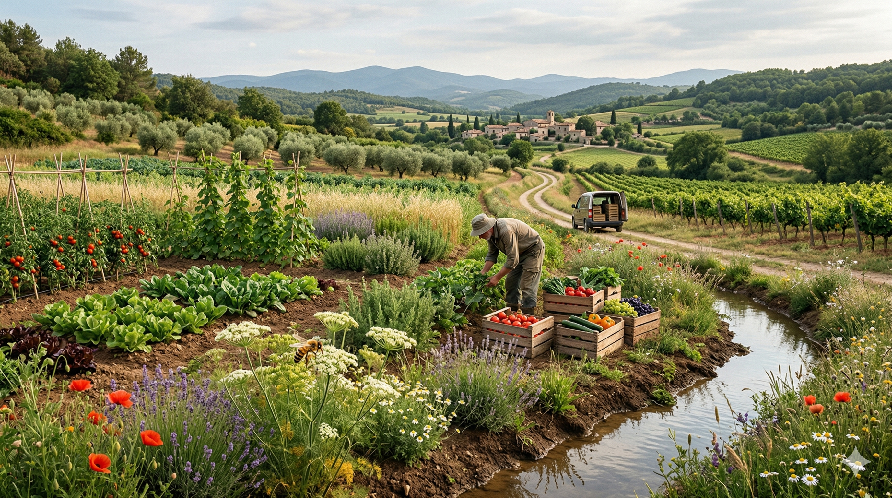
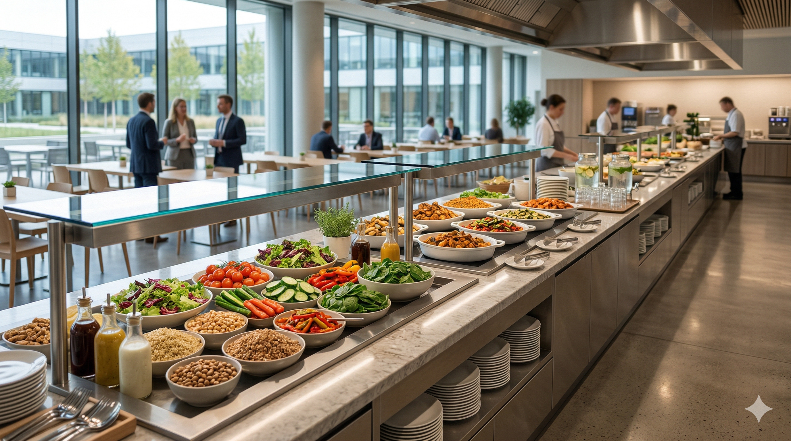
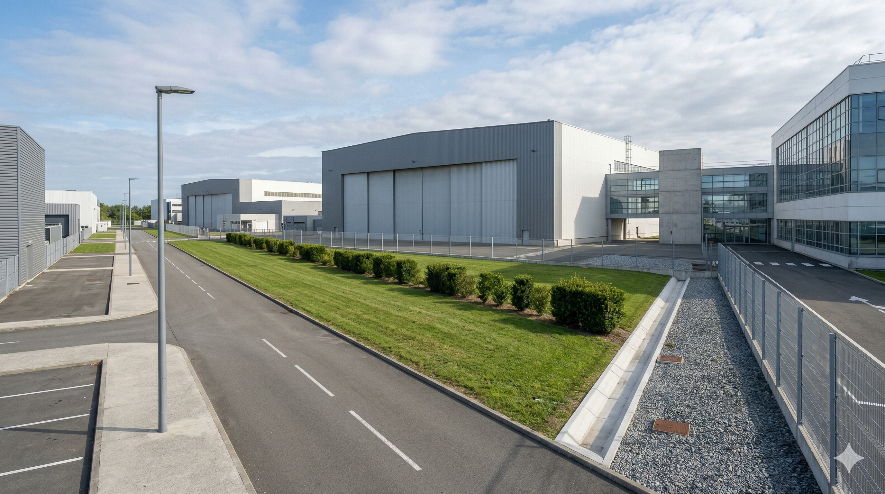
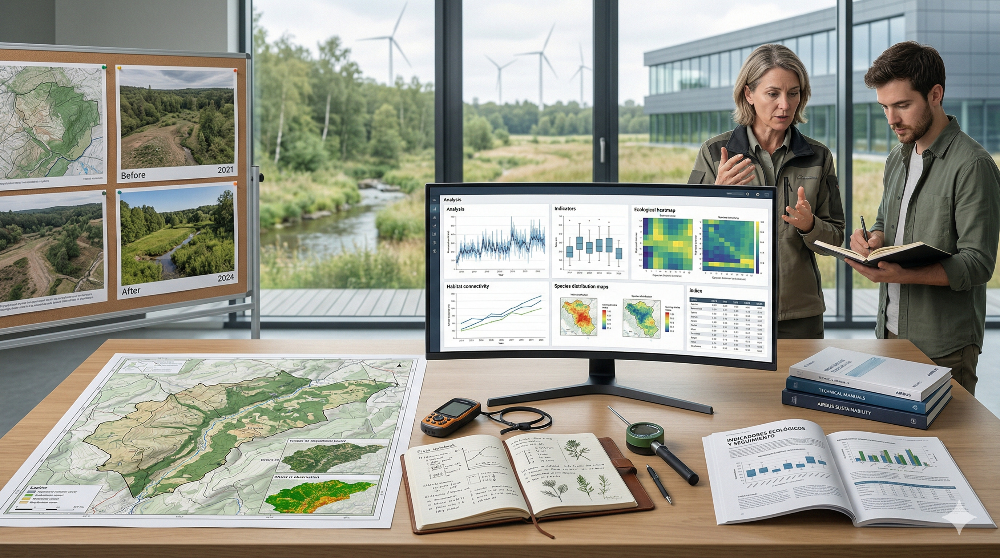
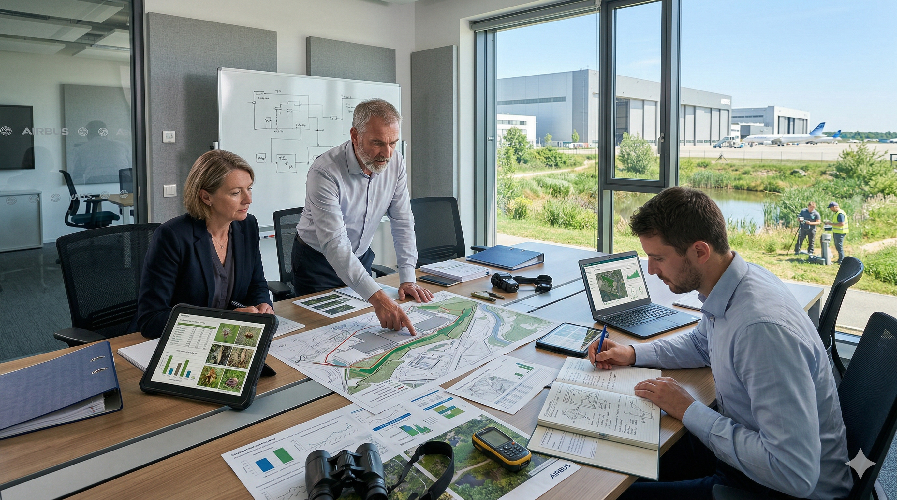
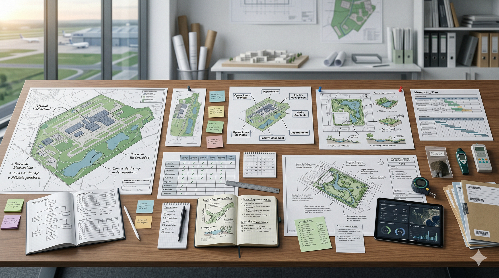
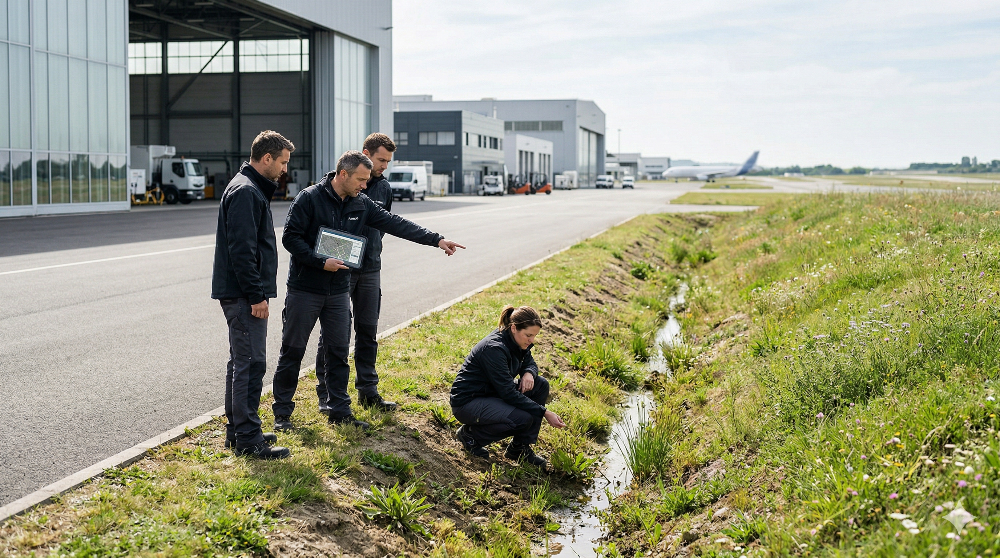

01
Módulo 1
20–25 min

Fundamentos de biodiversidad
Comprende qué es la biodiversidad, por qué importa y qué está en juego.
DisponibleRuta visual
Abrir módulo
Un recorrido digital para entender qué es la biodiversidad, por qué importa en Airbus, cómo se relaciona con decisiones cotidianas y cómo traducir ese aprendizaje a mejoras creíbles y aplicables en tu entorno de trabajo.
Experiencia premium, ritmo visual y recorrido claro desde los fundamentos hasta la acción aplicada.
La biodiversidad afecta a riesgos, recursos, decisiones, comunicación y credibilidad dentro de Airbus. Comprenderla bien es el primer paso para actuar con más criterio.
La biodiversidad influye en riesgos, recursos, decisiones, comunicación y credibilidad dentro de Airbus.
Compras, alimentación, mantenimiento, comunicación y uso del entorno también cuentan.
No toda iniciativa verde genera valor ecológico real.
Actuar y comunicar con criterio es clave para evitar mensajes vacíos.
Seis módulos estructurados, casos prácticos aplicados, actividades breves, progreso visible y un cierre orientado a formular tu propio plan de acción.

El curso está orientado a trabajadores y trabajadoras de Airbus, tanto de planta como de oficina, que quieran comprender mejor la biodiversidad y convertir esa comprensión en propuestas más creíbles.
Adulto y profesional.
Rigurosamente explicado.
Aplicado al contexto Airbus.
Fundamentos.
Airbus y decisiones.
Acción con evidencia.
Al terminar, tendrás una base más sólida para interpretar la biodiversidad, evaluar mejor las iniciativas ambientales y formular propuestas aplicables con más criterio y credibilidad.
Aquí encontrarás una secuencia clara de aprendizaje: comprender qué es la biodiversidad, ver cómo se relaciona con Airbus, conectarla con decisiones cotidianas, distinguir acciones sólidas de gestos simbólicos, entender qué medir y terminar con una propuesta propia aplicable.
Comprende qué es la biodiversidad, por qué importa y qué está en juego.

Analiza cómo la aeronáutica afecta a la biodiversidad desde el diseño hasta el fin de vida.

Explora cómo la alimentación, el consumo y los hábitos cotidianos influyen en la biodiversidad.

Aprende a distinguir entre intervenciones sólidas, mejoras parciales y acciones cosméticas.

Descubre cómo medir, justificar y comunicar impacto con mayor credibilidad.
Convierte el aprendizaje en una propuesta aplicable a tu entorno de trabajo.
En este módulo construirás la base del curso: qué significa biodiversidad, cuáles son sus tres niveles principales, qué funciones ecológicas sostiene, por qué no debe reducirse a una lista de especies visibles y qué presiones están provocando su pérdida.
La biodiversidad no se limita a especies visibles o espacios naturales emblemáticos. Incluye relaciones, procesos, interacciones y sistemas que sostienen la vida y buena parte de la actividad humana.
Biodiversidad es la variedad de vida en todas sus formas, sus relaciones y los sistemas que la sostienen. Incluye microorganismos, plantas, animales, suelos, hábitats y las conexiones ecológicas entre ellos.
Sin una base sólida es fácil simplificar en exceso, comunicar mal o apoyar iniciativas con poco valor ecológico real. Este módulo busca evitar esa superficialidad desde el principio.
Genes, especies, ecosistemas, procesos ecológicos, funciones esenciales y relaciones entre organismos.

Entender estos tres niveles ayuda a no reducir la biodiversidad a un único plano.
Es la variabilidad dentro de una misma especie. Permite adaptación, resistencia frente a enfermedades y capacidad de respuesta al cambio.
Es la variedad de especies presentes en un territorio o sistema ecológico. Cuanta mayor diversidad existe, más funciones puede sostener el conjunto.
Es la variedad de hábitats, comunidades y procesos naturales: bosques, humedales, suelos, ríos, matorrales y otros sistemas que sostienen condiciones distintas para la vida.
Cuando la biodiversidad se deteriora, no solo desaparecen especies: también se debilitan funciones ecológicas de las que dependemos.
Sin suelos vivos y funcionales, los sistemas ecológicos pierden capacidad de sostener biodiversidad y productividad.
Muchas especies dependen de polinizadores para reproducirse y mantener cadenas tróficas y sistemas alimentarios.
La biodiversidad ayuda a filtrar, regular y almacenar agua en mejores condiciones ecológicas.
Los ecosistemas diversos responden mejor a cambios y perturbaciones que los sistemas simplificados.
Las relaciones ecológicas ayudan a contener desequilibrios y a evitar proliferaciones problemáticas.
Cuanta más diversidad y complejidad ecológica existe, mayor capacidad de adaptación tiene el sistema.
La pérdida de biodiversidad no tiene una sola causa. Varias presiones actúan al mismo tiempo.
La transformación de hábitats en infraestructuras o sistemas simplificados reduce complejidad ecológica y conectividad.
Altera suelo, agua y aire; daña especies sensibles y modifica procesos ecológicos esenciales.
Extraer recursos por encima de su capacidad de regeneración debilita poblaciones y rompe equilibrios.
Desajusta ciclos biológicos, desplaza especies y agrava otras presiones ya existentes.
Pueden desplazar especies locales, competir por recursos, alterar cadenas tróficas y cambiar el funcionamiento del sistema en poco tiempo.
La variedad de vida, sus relaciones y los sistemas que la sostienen.
La diversidad financiera no forma parte de la biodiversidad.
Porque ayuda a evitar simplificaciones y a diseñar acciones con más criterio.
Piensa en una zona exterior, una acción de sensibilización, una práctica de mantenimiento o una medida de mejora ambiental.

Este módulo estudia cómo la aeronáutica afecta a la biodiversidad desde la cuna hasta la tumba: diseño, materiales, fabricación, operación, mantenimiento, retirada del servicio y reciclaje.
Método para evaluar impactos ambientales a lo largo de todas las fases de un producto o sistema.
Su valor depende de criterios exigentes de sostenibilidad y de su desempeño en ciclo de vida.
Establece marcos y metodologías internacionales para la aviación civil.
Marco internacional que introduce metodologías y criterios de sostenibilidad para combustibles elegibles.
Un avión no debería evaluarse solo cuando vuela. Diseño, extracción de materiales, fabricación, logística, operación, mantenimiento, retirada del servicio y reciclaje forman parte del mismo sistema.
La fase de uso domina gran parte de la huella climática, pero biodiversidad no se reduce a emisiones: también aparecen impactos locales y materiales en fases distintas.
Parte del daño es local y directo, y otra parte es indirecta o desplazada a la cadena de suministro, combustibles o materiales.


Condiciona masa, materiales, eficiencia, mantenibilidad y reciclabilidad.
Concentra consumo de materiales, energía, residuos y presión sobre materias primas.
Aparecen combustible, ruido, iluminación, fauna, escorrentías y actividad aeroportuaria.
Importan recuperación de materiales, reutilización de piezas y diseño para desmontaje.
Pérdida y degradación de hábitats, fragmentación, simplificación del entorno y relación con fauna por seguridad operacional.
Alteran comportamiento, comunicación, reproducción y uso del espacio en numerosas especies.
Las emisiones alteran temperatura, precipitación, fenología y disponibilidad de agua.
Parte de la presión ocurre donde se extraen, transforman y transportan materiales y energía.
Diseño más eficiente, materiales, combustibles sostenibles, operación y circularidad no resuelven lo mismo. La lección importante es aprender a leer el sistema completo.
Este módulo explica por qué la alimentación y los hábitos cotidianos influyen en la biodiversidad. No se trata solo de lo que comemos, sino del sistema que hace posible esa comida.
Lo que parece una decisión individual se apoya en cadenas de producción y consumo que pueden intensificar o reducir presión sobre suelos, agua, hábitats y ecosistemas marinos.
Antes de llegar a una cafetería o a una mesa, un alimento ya ha pasado por decisiones de uso del suelo, riego, fertilización, transporte, procesado y conservación.
La intención es aportar criterio para leer mejor el sistema alimentario: qué patrones ejercen más presión y qué cambios pueden reducirla.


Incluye producción, transformación, transporte, distribución, restauración, consumo y residuo.
Es la forma en que una actividad reduce calidad del hábitat o altera procesos ecológicos.
No es una compra aislada, sino una combinación repetida de frecuencia, cantidad, origen y desperdicio.
Ayuda a interpretar mejor origen, sistema productivo, procesado y residuo.
Bosques, pastizales o humedales se transforman en superficies agrícolas, ganaderas o infraestructuras asociadas.
Menos diversidad de cultivos, menos heterogeneidad del paisaje, menos refugios y menos relaciones ecológicas.
Riego intensivo, fertilizantes y efluentes alteran ríos, suelos, acuíferos y ecosistemas receptores.
Sobrepesca, capturas accesorias, degradación de hábitats costeros y presión sobre cadenas tróficas.
Cafetería, vending, catering y compras internas pueden analizarse mejor cuando se añaden preguntas sobre patrón de consumo, desperdicio, trazabilidad y presión probable sobre biodiversidad.
Este módulo explica qué diferencia conservar, preservar, restaurar y aplicar soluciones basadas en la naturaleza, y cómo distinguir entre intervenciones con valor ecológico real y acciones principalmente cosméticas.
Evita deterioro adicional, mantiene integridad ecológica y protege biodiversidad antes de que el sistema se degrade más.
Busca asistir la recuperación de un ecosistema degradado para mejorar estructura, composición, función y trayectoria ecológica.
Protegen, gestionan o restauran ecosistemas para responder a retos sociales al tiempo que generan beneficios para biodiversidad y personas.


Hay que entender presiones, estado inicial y trayectoria de degradación.
La recuperación necesita una condición de referencia razonable y coherente con el lugar.
Si la presión principal sigue activa, la restauración se debilita.
Importa si mejora infiltración, suelo, refugio, conectividad o regeneración.
Sin seguimiento, la mejora queda en afirmaciones difíciles de defender.
La solución debe encajar con el uso real del lugar y con sus restricciones operativas.
Reduce presiones, mejora integridad ecológica y puede justificarse con objetivos e indicadores.
Aporta algo, pero de forma parcial o estrecha, sin cambiar sustancialmente la condición del sistema.
Prioriza apariencia u orden visual sin una mejora ecológica significativa.
En Airbus no todo lo valioso será espectacular ni todo lo vistoso será ecológicamente sólido. El criterio sirve para revisar entorno, mantenimiento, comunicación y mejoras de planta.
Este módulo explica cómo convertir acciones de biodiversidad en iniciativas medibles, defendibles y comunicables con más credibilidad.
Variable que resume información compleja para apoyar decisiones.
El punto de partida frente al que se comparan los cambios.
Muchas veces se usan sustitutos razonables y siempre conviene explicar incertidumbre y alcance real.


Sellado del suelo, fragmentación, contaminación, invasoras, ruido o iluminación.
Condición del sistema: hábitat, vegetación nativa, suelo, conectividad o agua.
Lo que se hace: superficie tratada, cambios de manejo, protocolos o presupuesto.
Lo que realmente cambia: mejora de cobertura nativa, conectividad o reducción de presión.
Definir qué decisión se quiere apoyar y qué error costaría más cometer.
Delimitar lugar, horizonte temporal y frecuencia de revisión.
Elegir variables sensibles y científicamente defendibles.
Fijar punto de partida, meta y criterio de cambio.
Explicar límites, sesgos, lagunas de información y confianza.
Medir para corregir y aprender, no solo para reportar.
La utilidad está en construir seguimientos sobrios, claros y defendibles, con separación nítida entre presión, estado, respuesta y resultado.
Este módulo convierte el aprendizaje del curso en una propuesta aplicable a tu entorno de trabajo. La idea es convertir lo aprendido en una propuesta clara, útil y realista para Airbus.
El cierre natural del curso consiste en convertir el conocimiento adquirido en una acción razonable y adaptada al contexto real de Airbus.
Una buena propuesta responde a un problema bien planteado, encaja con el lugar y puede explicarse con criterio técnico y operativo.
La meta es identificar una oportunidad real, priorizar una acción posible y formular una propuesta que pueda discutirse con madurez dentro de Airbus.


Qué oportunidad de mejora has identificado y dónde aparece dentro de Airbus.
Qué presión o debilidad corrige y por qué merece prioridad.
Qué harías exactamente y con qué alcance o formato piloto.
Qué indicador seguirías y en qué plazo tendría sentido revisarlo.
Gestión del suelo, drenajes, iluminación, siegas, vegetación, conectividad o invasoras.
Revisar prácticas recurrentes con lógica ecológica y no solo operativa.
Introducir criterios ambientales y ecológicos más útiles y verificables.
Mejorar cómo se explica, se prioriza o se integra la biodiversidad en la organización.
Después de este módulo, el recorrido debería traducirse en una propuesta mejor enfocada, más sobria, más viable y más creíble dentro de Airbus.